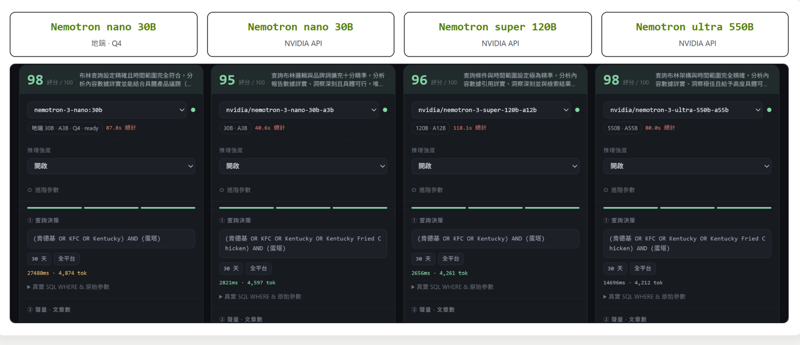

NemoClaw × Nemotron · The Pocket Company
30B = 550B?
Blind Eval · 0–100
Pandora 的資料檢索與內容解析，
需要大模型嗎？
挑品牌輿情分析工具實測：
同一題、同一套檢索，只換模型
，30B 到 550B，盲評 0–100。

像這樣簡單的工具調用，
小模型其實就能做得很好
── 本輪 30B 與 550B
同分
。
單輪示意 · 完整 110 輪盲評計分從下一段開始
CH 01 · MODEL SIZE